S07
単一研究の方法・設定 SRTは、画像集合から新しい視点を直接予測する 少数の入力画像をTransformerで一つの場面表現へ集約し、問い合わせる視線へのAttentionで画像を合成する。場面ごとの反復再構成を省く方法です。
画像をまとめ、視線から読み出す CNNの画像特徴をEncoder Transformerで集約し、DecoderへQuery raysを与える。
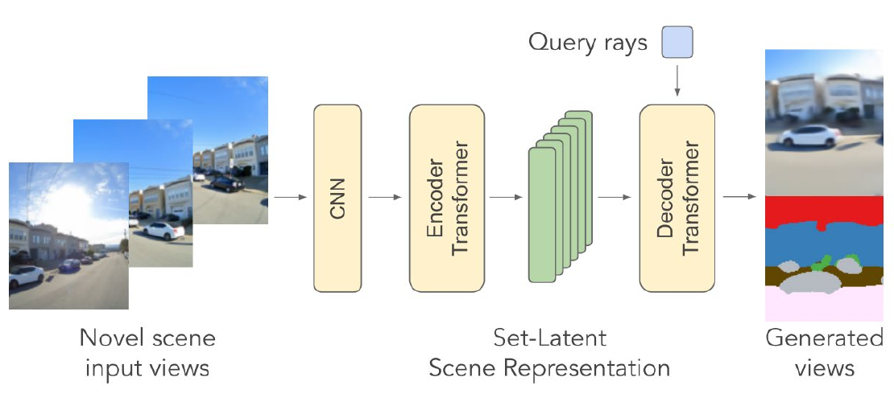
提供PDF p.74｜SRTとして紹介された方法図 方法の要点： 入力画像の符号化と視点の指定を分離し、同じ場面表現から複数の視点を生成できる構成です。
近傍と遠方で、細部の再現が変わる 資料は、入力画像にカメラ姿勢を付ける設定と、付けない設定の双方を紹介しています。
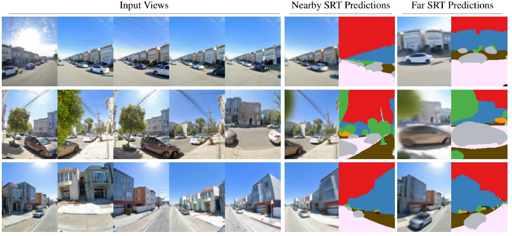
提供PDF p.74｜入力・近傍予測・遠方予測 掲載例の結果： 三場面とも、遠方の予測は近傍より輪郭や細部がぼけて見えます。入力から離れた視点で外観を保つことが評価の焦点になります。
少数画像から一度の推論で視点を変える。入力視点からの距離とカメラ情報の条件で、出力の再現性を評価します。
方法図のCNN・Encoder・Decoderと、結果図の入力／近傍／遠方を対応づけます。場面表現の共有という新規性と、視点が離れたときの細部の再現を一つの紹介に結びます。
提供資料からの抜粋・分析用参考例です。原論文の図番号・実験条件・科学的主張は原典と独立照合していません。書誌は資料に記載されたものです。
S08
単一研究の主要結果 DeepSDFの形状表現は、再構成と補間へ使える 形状コードと座標から、表面までの符号付き距離（SDF）を予測する。距離ゼロの面で形状を表し、コードを変えて複数形状を扱います。
再構成では、背の隙間を保つ 左から参照形状、DeepSDF、25 patch、sphere。赤枠がDeepSDFの出力です。
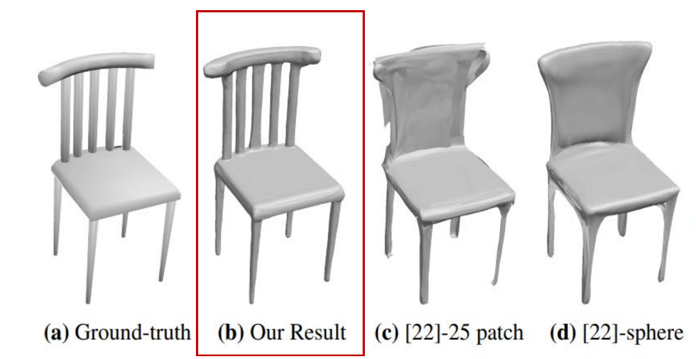
提供PDF p.24｜DeepSDFの再構成比較 掲載例の結果： DeepSDFは背の細い支柱と隙間を再現し、二つの比較手法は背を面状に埋めています。この椅子では、薄い構造の再現に差が現れます。
コードの補間で、形状を段階的に変える 椅子と車の二系列で、形状間の補間を示しています。
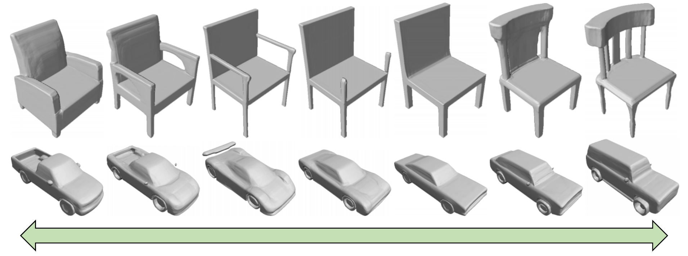
提供PDF p.25｜DeepSDFの形状補間 補間で分かること： 背もたれ・肘掛けや車体の形が段階的に変わります。形状ごとのコードを持つ表現は、再構成に加えて形状間の移り変わりを扱えます。
SDFで表面を表し、コードで個体差を扱う。掲載例は、細部の再構成と形状間の補間という二つの用途を示します。
p.21–22のSDFと形状コードの説明を短い導入へ取り込み、p.24の再構成比較とp.25の補間を別の能力として並べます。比較する局所構造と、補間で変わる形状を本文で具体化します。
提供資料からの抜粋・分析用参考例です。原論文の図番号・実験条件・科学的主張は原典と独立照合していません。書誌は資料に記載されたものです。
S09
研究間比較 三角形の独立性と連結性が、最適化の単位を変える Triangle Splattingは三角形の集合を、MeshSplattingは頂点を共有するメッシュを、微分可能レンダリングで直接最適化します。
Triangle Splatting：各三角形を更新 三角形をスクリーン空間のsplatとして描画し、勾配でパラメータを更新する。
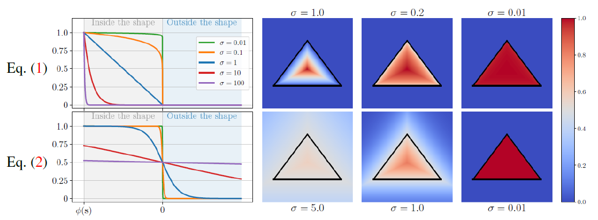
提供PDF p.51｜式と描画の挙動 描画の挙動： 式（1）と（2）は三角形の外側への広がりが異なります。σを小さくした図では境界がくっきりし、パラメータと描画の関係が見えます。
MeshSplatting：共有頂点を更新 隣接する三角形で頂点を共有し、幾何と外観を同時に最適化する。
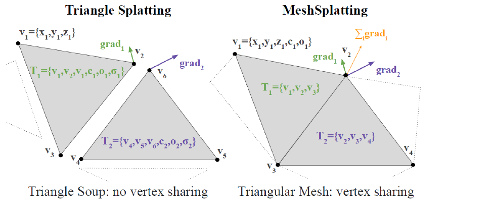
提供PDF p.51｜頂点共有の対照 共有による差： 独立三角形は頂点を別々に持ちます。共有頂点には隣接三角形の勾配が集まり、連結を持つ構造として更新されます。
共通点は微分可能な直接最適化。三角形を独立に動かすか、共有頂点を通じて連結を持たせるかが設計上の違いです。
左は式・σ・描画を対応づけ、右は頂点の同一性と勾配の集まり方を比較します。共通のレンダリング手法を背景に、更新する要素と隣接関係の違いを説明する作例です。
提供資料からの抜粋・分析用参考例です。原論文の図番号・実験条件・科学的主張は原典と独立照合していません。書誌は資料に記載されたものです。
S10
時系列と転換点 空間を符号化する設計から、表面へ束縛する設計へ 2022年のInstant-NGPは空間を複数解像度で符号化し、2024年のSuGaRはGaussianを表面へ関係づける。表現に与える構造の違いを追います。
2022｜空間特徴を検索・補間する 異なる解像度のグリッドで特徴を保持し、検索・補間・連結した特徴をネットワークへ渡す。
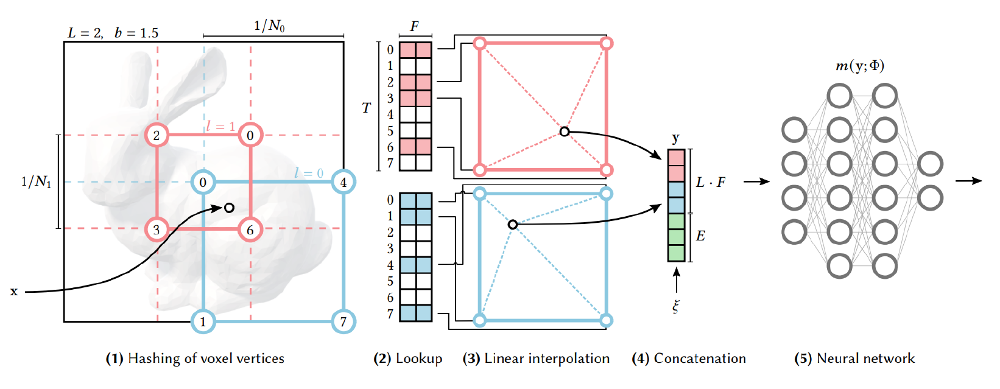
提供PDF p.40｜Instant-NGPとして掲載された図 空間構造の役割： 位置ごとの情報をデータ構造へ分担し、MLPだけに場面全体を保持させる構成を変えています。
2024｜Gaussianを三角形へ束縛する 3D Gaussianを表面へ整列させ、抽出メッシュの三角形へ新しいGaussianを束縛して最適化する。
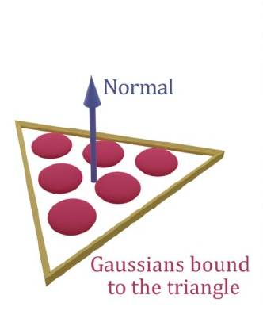
提供PDF p.50｜三角形への束縛図 表面構造の役割： 三角形とGaussianの対応を持たせ、表面形状と外観を表す要素を結びつけています。
構造を持たせる場所が異なる。空間特徴の効率的な利用と、表面に沿う幾何表現を分けて評価します。
年次は二つの設計を読む道筋として使います。検索・補間する空間特徴と、Gaussianを束縛する表面の違いを図のラベルへ結び、設計の焦点がどこへ移ったかを説明します。p.50の図の直接出所は提供PDF頁に限定します。
提供資料からの抜粋・分析用参考例です。原論文の図番号・実験条件・科学的主張は原典と独立照合していません。書誌は資料に記載されたものです。
S11
結果と評価条件 同変モデルはデータ効率が高く、拡張で差が縮まる 幾何的な対称性を組み込む同変モデルをBaselineと比較する。縦軸はLoss、横軸は計算量またはデータ量で、いずれも対数軸です。
同じ計算量で、Lossの近似線が低い 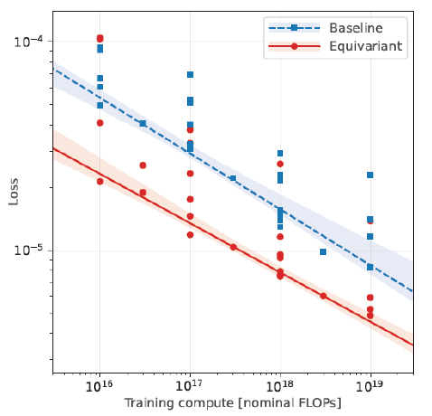
提供PDF p.13｜計算量とLoss 計算量との関係： 掲載範囲の近似線では、赤の同変モデルが青のBaselineより低いLossを示します。計算量が大きい領域にも系列間の差が残っています。
データ拡張が、同変モデルとの差を縮める 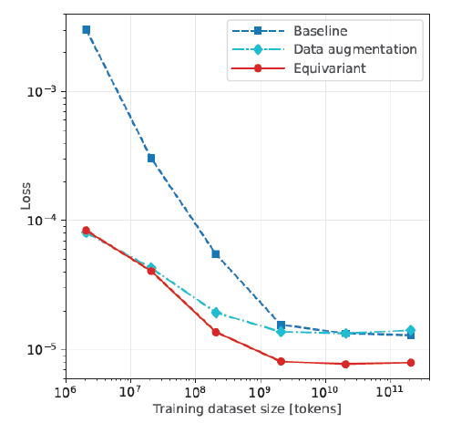
提供PDF p.13｜データ量とLoss 拡張の効果： 拡張した水色の系列は、青のBaselineより赤の同変系列へ近づきます。資料は、同変モデルのデータ効率は高いが、拡張が差をほぼ埋めると評価しています。
対称性を設計へ組み込む価値は、少ないデータでの効率と、拡張を加えた後の差を併せて評価します。
二つの結果図で資源の種類を分けます。左は同じ計算量での近似線、右は拡張系列の位置に注目し、同変性の利点と拡張による差の縮小を具体的に説明します。帯の定義はこの資料だけでは確認できません。
提供資料からの抜粋・分析用参考例です。原論文の図番号・実験条件・科学的主張は原典と独立照合していません。書誌は資料に記載されたものです。
S12
不一致・反証の比較 球面に固定しても、訓練視点の外観は再現できる 形状を単位球に固定し、視線方向で変わる外観だけを学習した例。訓練画像は再現できる一方、テスト視点では物体の輪郭と部品配置が崩れます。
掲載画像のPSNR：訓練25.4、テスト10.7 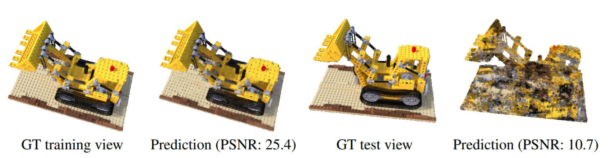
提供PDF p.54｜訓練・テスト視点と予測 反例の結果： 訓練視点の予測は部品や輪郭を保ちますが、テスト視点は崩れます。掲載画像のPSNRは、訓練25.4に対してテスト10.7です。
外観と形状の組合せに曖昧さがある 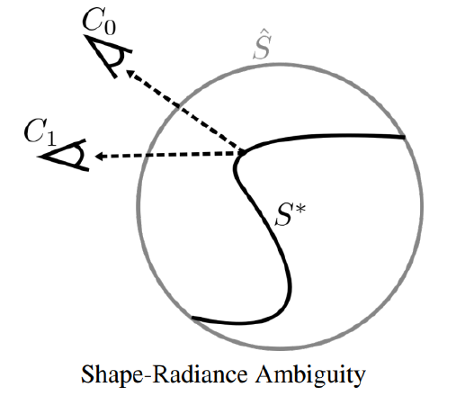
提供PDF p.54｜Shape-Radiance Ambiguity 反例の仕組み： 誤った形状でも、視線依存の外観で観測画像へ合わせられます。観測に合う形状と外観の組が、一つに定まらないことを示す例です。
画像の一致だけでは正しい幾何は保証されません。幾何の評価には、未観測視点での再現や3D形状の検証を加えます。
形状の固定、視線依存の学習、訓練／テストの差を明示し、成功と失敗を同じ反例の中で説明します。否定は「画像が合えば幾何も正しい」という仮説を退けるために使います。PSNRは掲載画像の値です。
提供資料からの抜粋・分析用参考例です。原論文の図番号・実験条件・科学的主張は原典と独立照合していません。書誌は資料に記載されたものです。
S14
統合と機序 Gen3Rは同時分布を、CUPIDは生成と姿勢推定を使う Gen3Rは動画と再構成の同時分布を一つのモデルで扱う。CUPIDは生成した3D構造と2D–3D対応から姿勢を求め、外観生成へつなぎます。
Gen3R：幾何と動画の潜在表現を接続 VGGTの幾何と動画生成モデルをAdapterで接続し、Joint Latentsで扱う。
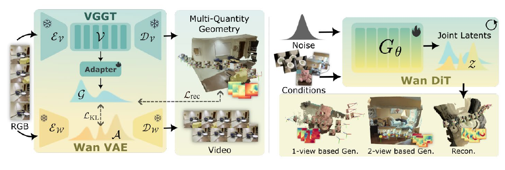
提供PDF p.104｜Gen3Rの経路 一つのモデルの役割： 1／2視点からの条件付き生成、カメラ条件あり／なし、Feed-Forward再構成に対応します。同じモデルで、入力画像数やカメラ条件の違いを扱います。
CUPID：生成した対応から姿勢を求める 構造と2D–3D対応を生成し、PnPで姿勢を推定。画像画素に対応する特徴を次の生成へ入れる。
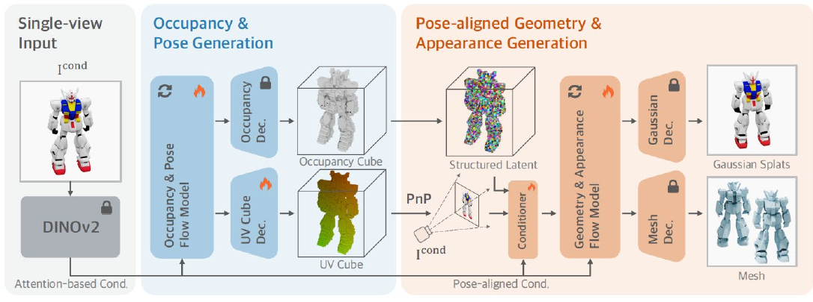
提供PDF p.104｜CUPIDの経路 二段階の役割： まず構造と姿勢を求め、次に姿勢に合わせた幾何と外観を生成します。図ではGaussianとMeshの出力を示しています。
比較： Gen3Rは生成と再構成を一つのモデルにまとめ、CUPIDは対応・姿勢を介して生成を条件づけます。
統一する出力・条件の範囲と、幾何の整合を入れる位置に、両者の統合方法の違いが現れます。
Gen3RはAdapterとJoint Latents、CUPIDは対応・PnP・姿勢に整合する生成を読む経路にします。方法名だけでなく、何を統一し、どの情報を次段へ渡すかを比較します。
提供資料からの抜粋・分析用参考例です。原論文の図番号・実験条件・科学的主張は原典と独立照合していません。書誌は資料に記載されたものです。
S15
結論・限界・次の問い 内部の幾何関係と、未観測部分の補完を分ける 内部から幾何を読み出す能力と、観測に事前知識を加えて生成する能力を分けて評価します。
VGGT：中間層から基礎行列を復元 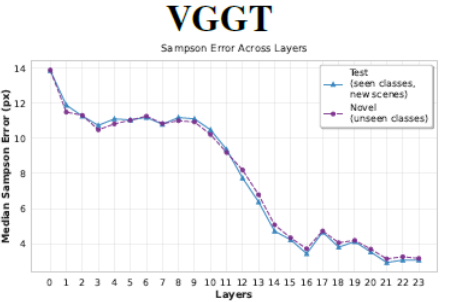
提供PDF p.93｜VGGT・合成データの代表パネル 掲載パネルの結果： 2層MLPで基礎行列を読み出すと、合成データのVGGTでは12–14層付近で誤差が急減します。資料は、不可視の対応を補完する性質も報告しています。
Gen3R：観測を条件に幾何と動画を生成 提供PDF p.104｜生成と再構成の方法 観測： 1／2視点の画像やカメラ条件を与える。
生成： 幾何と動画の潜在表現から、複数の出力を作る。
補完： 観測に不足する情報へ、学習した事前分布を使う。
中間層の幾何関係と不可視対応の補完を区別し、未観測部分の形状を検証することが次の課題です。
p.93の六パネルからVGGT・合成データを選び、Median Sampson Error（px）・Layers・seen／novel classesの凡例を保持します。p.103の観測と事前分布の区別、p.104のGen3Rの方法を対置し、内部の幾何関係と観測不足を補う能力を別の評価対象へ位置づけます。
提供資料からの抜粋・分析用参考例です。原論文の図番号・実験条件・科学的主張は原典と独立照合していません。書誌は資料に記載されたものです。
S01
問いと対象範囲 通知支援は、誰のどの課題を支えるのか 通知支援は、
短期の作業再開と、
対象 成人の通知利用
場面 実験室と生活空間
比較 固定時点と課題・状況への適応 今回の範囲：短期の再開と生活負担。子どもの利用と長期学習の効果は結論に含めません。
中心質問を左の約6割、対象・場面・期間を右に整列し、下端へ今回扱わない範囲を置きます。最初に問い、次に対象、最後に境界を読みます。 対象が増えたら対象範囲と中心質問を分け、細かな除外条件は手順付録へ送ります。問いが抽象語だけになっていないか、期間の境界が読めるかを点検します。
S02
全体の見取り図・節案内 定義から比較へ、比較から条件付きの結論へ 01 何を通知支援と呼ぶか概念と操作を分ける
02 どの研究を集めたか集合と偏りを知る
03 どの条件で結果が違うか現在：方法と比較
04 どこまで転用できるか境界と次の検証
この節で答える問い
同じ「通知」でも、
結果を並べる前に、
左に質問順の縦の経路、右に現在節で答える問いを大きく置きます。現在位置は色と「現在」の文字で二重に示し、済んだ問い・次の問いを分けます。 節が多ければ全体図と局所図を分けます。詳細な章番号は付録へ送り、現在位置を色だけで判別させていないか確認します。
S03
概念定義と隣接概念 通知のタイミングと、通知の量を分ける このサーベイの採用定義
通知のタイミング：一つの通知を提示する時点
典型例：即時に示すか、課題の区切りで示すか。
隣接する別の操作 回数・内容・強度
通知を減らすこととは分ける。
同じ語でも、操作した属性が違えば同じ介入とは扱いません。
上部に採用する定義、下部に近い概念との違いを二列で置きます。対象単位と典型例を先に、境界例・該当しない例を後に示します。 定義が競合すれば別ページで原資料ごとの適用範囲を比較します。用語対応表は付録へ。語が同じという理由で対象・測定を統合していないか点検します。
S04
検索・選定過程 取得した報告から、対象に合う研究を選ぶ 架空の選択過程です。特定の報告標準への準拠を示すものではありません。
中央に取得→重複除外後→全文確認→採用を縦に置き、各段階の右に除外件数と理由を並べます。件数の単位を流れの内側で明示します。 検索源が増えたら検索源別の表を別ページにします。式の整合、全文未取得と対象外の区別、どの時点の検索かを点検します。
S05
文献集合の概観 12研究のうち、9研究は短期の実験だった 短期実験 9 生活場面 3
短期実験 課題と通知条件をそろえて比較
生活場面 日常利用の負担を確認 この12研究の内訳です。
短期の比較が中心です。生活場面への転用は別に判断します。
左に研究数と単位、右に実験9・生活場面3の一本の構成帯、下にそれぞれが答えられる範囲を置きます。件数を最初に、構成と限界を続けます。 分類が多ければ一軸ずつ分け、個別研究一覧は付録へ。分母12、重複分類の有無、未知の分類を0件にしていないか確認します。
S06
分類地図 比較条件と、主指標の測定範囲を分ける
固定時点どうしの比較 状況適応を含む比較 短期課題の指標 生活場面の負担 適応条件を一つでも含めば右列。主指標の場面で行を選び、一研究を一セルだけ数えます。
横軸を固定時点どうしの比較・状況適応を含む比較、縦軸を主指標の測定範囲（短期課題・生活場面の負担）とする2×2の地図を中央に置きます。セルには研究数と該当研究の例を置きます。 軸が増えたら同じ横軸を保つ別ページへ分割します。三次元の飾りを加えず、分類の排他性と未分類の扱いを確認します。
S13
研究ギャップ 情報不足と、差を確認しなかった結果を分ける 問いごとに、確認範囲と情報の状態を区別する 問い 確認状態 確認範囲 次の判断 対象年齢の内訳 不明 記載を確認したが確定できず 年齢別の転用を保留 生活場面の負担 確認済み 生活場面3研究 尺度を分ける 長期の学習 未報告 採用12研究を確認 調査範囲を広げるか判断 睡眠への影響 未調査 検索・読解を未実施 調べる必要性を判断 子どもの利用 対象外 成人に範囲を限定 別の調査として扱う 反応精度 差を確認せず 例示研究E・36人 不足ではなく結果を保持
不明・未報告・未調査・対象外は、差を確認しなかった観測結果と異なります。
問い、確認状態、確認範囲、次の判断の四列を置きます。空欄は使わず、不明・未報告・未調査・対象外・差を確認せずを文字で示します。 問いが多ければ意思決定に関わる不足を先にし、全ギャップは付録へ。空欄や灰色だけで状態を表していないか、未取得を否定へ変えていないか点検します。
S16
参考文献・付録導線 根拠と詳細へ、問いに応じて戻れるようにする 実案件では正式な参考文献と所在を記載し、主張付近の出典表示も残します。
左に主要根拠の一覧、右に方法・比較・未報告事項の付録への問い付き導線を置きます。原資料の版・所在は実案件で追跡できる形にします。 全件一覧は別の参考文献ページへ分け、本文には重要な導線を残します。リンク先・版・頁と、本文の主張付近の出典を点検します。